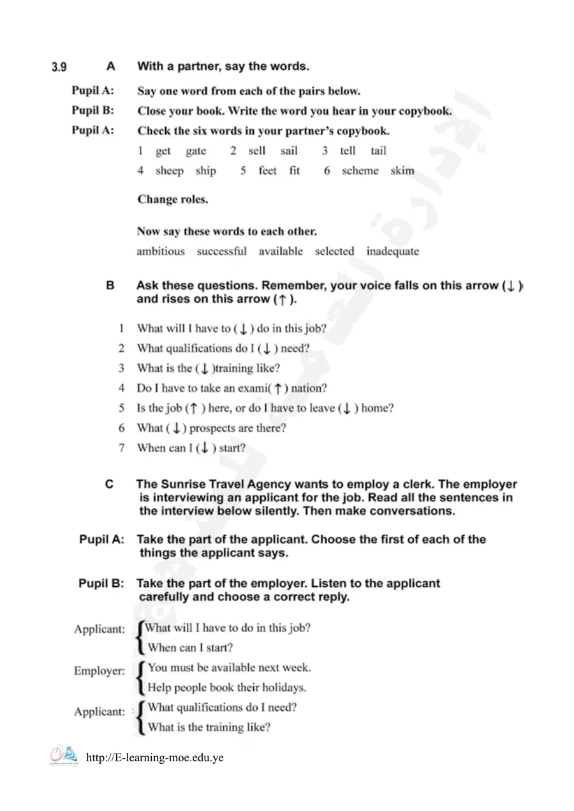

3.9 A With a partner, say the words. Pupil A: Say one word from each of the pairs below. Pupil B: Close your book. Write the word you hear in your copybook. Pupil A: Check the six words in your partner's copybook. 1 get gate 2 sell sail 3 tell tail 4 sheep ship 5 feet fit 6 scheme skim Change roles. Now say these words to each other. ambitious successful available selected inadequate B Ask these questions. Remember, your voice falls on this arrow (↓) and rises on this arrow (↑). 1 What will I have to (↓) do in this job? 2 What qualifications do I (↓) need? 3 What is the (↓)training like? 4 Do I have to take an exami(↑)nation? 5 Is the job (↑) here, or do I have to leave (↓) home? 6 What (↓) prospects are there? 7 When can I (↓) start?
(↓)training، وحُفظ كذلك حرفياً؛ كما تصحّح المراجعة البصرية لصورة wb-039.png غياب الضمير I في مخرجات OCR للسؤال 7 لتثبيت النص الصحيح: When can I (↓) start?.C The Sunrise Travel Agency wants to employ a clerk. The employer is interviewing an applicant for the job. Read all the sentences in the interview below silently. Then make conversations.
Pupil A: Take the part of the applicant. Choose the first of each of the things the applicant says.
Pupil B: Take the part of the employer. Listen to the applicant carefully and choose a correct reply.
Turn 1 — Applicant: { What will I have to do in this job? | When can I start? }
Turn 1 — Employer: { You must be available next week. | Help people book their holidays. }
Turn 2 — Applicant: { What qualifications do I need? | What is the training like? }
(WB p. 39) Turn 2 — Employer: { You will learn how to book plane tickets and how to use a computer. | You don't need any. We will teach you everything. }
Turn 3 — Applicant: { Do I have to take an examination? | Is the job here, or do I have to leave home? }
Turn 3 — Employer: { No. But we will look at your work after three months. | Later you will have the chance to work abroad. }
Turn 4 — Applicant: { What prospects are there? | How much will I earn? }
Turn 4 — Employer: { Initially you will get £800 a month. | Oh, this is a job with a future because more and more people are going on holiday nowadays. }
Change roles. The new applicant should choose the second options.
Listen to the model conversations to check your own.
D Ask and answer questions about another job. One of you takes the part of the applicant, the other the employer.[
{
"num": 1,
"prompt": "1 Short /e/ in 'get' contrasts with diphthong /eɪ/ in: ______",
"answers": [
"gate"
]
},
{
"num": 2,
"prompt": "2 Long /iː/ in 'scheme' contrasts with short /ɪ/ in: ______",
"answers": [
"skim"
]
},
{
"num": 3,
"prompt": "3 Stressed syllable pattern for 'ambitious': ______",
"answers": [
"am-BI-tious"
]
},
{
"num": 4,
"prompt": "4 Intonation in Wh-questions (#1, 2, 3, 6, 7, e.g., What prospects are there?): ______",
"answers": [
"falling (↓)"
]
},
{
"num": 5,
"prompt": "5 Intonation in Yes/No Q4 (Do I have to take an exami__nation?): ______",
"answers": [
"rising (↑)"
]
},
{
"num": 6,
"prompt": "6 Intonation in alternative Q5 (Is the job __ here, or do I have to leave __ home?): ______",
"answers": [
"rising (↑) then falling (↓)"
]
}
][
{
"num": 1,
"question": "Turn 1 — Option 1: 'What will I have to do in this job?'",
"model_answer": "Help people book their holidays.",
"explain_ar": "يسأل عن مهام الوظيفة (do)، فيردّ صاحب العمل بمساعدة الناس على حجز العطلات."
},
{
"num": 2,
"question": "Turn 1 — Option 2: 'When can I start?'",
"model_answer": "You must be available next week.",
"explain_ar": "يسأل عن موعد البدء (When)، فيردّ بتفرّغه الأسبوع القادم."
},
{
"num": 3,
"question": "Turn 2 — Option 1: 'What qualifications do I need?'",
"model_answer": "You don't need any. We will teach you everything.",
"explain_ar": "يسأل عن المؤهلات (qualifications)، والإجابة: لا تحتاج أياً منها (any)."
},
{
"num": 4,
"question": "Turn 2 — Option 2: 'What is the training like?'",
"model_answer": "You will learn how to book plane tickets and how to use a computer.",
"explain_ar": "يسأل عن طبيعة التدريب، والإجابة توضّح ما سيتعلمه."
},
{
"num": 5,
"question": "Turn 3 — Option 1: 'Do I have to take an examination?'",
"model_answer": "No. But we will look at your work after three months.",
"explain_ar": "سؤال نعم/لا عن وجود اختبار ← يبدأ الردّ بـ No."
},
{
"num": 6,
"question": "Turn 3 — Option 2: 'Is the job here, or do I have to leave home?'",
"model_answer": "Later you will have the chance to work abroad.",
"explain_ar": "يسأل عن مكان العمل/السفر ← الإجابة تتحدث عن العمل بالخارج (work abroad)."
},
{
"num": 7,
"question": "Turn 4 — Option 1: 'What prospects are there?'",
"model_answer": "Oh, this is a job with a future because more and more people are going on holiday nowadays.",
"explain_ar": "prospects تعني المستقبل الوظيفي (a job with a future)."
},
{
"num": 8,
"question": "Turn 4 — Option 2: 'How much will I earn?'",
"model_answer": "Initially you will get £800 a month.",
"explain_ar": "يسأل عن الراتب ← £800 شهرياً مبدئياً."
}
][
{
"label_ar": "1) سؤال المهام (Wh-questions بنبرة هابطة ↓)",
"placeholder": "Applicant: What will I have to do in this job? | Employer: You will help visitors as a tourist guide."
},
{
"label_ar": "2) سؤال المؤهلات والتدريب والاختبار (بنبرة ↑ في Yes/No)",
"placeholder": "Applicant: Do I have to take an exami(↑)nation? | Employer: No, you will receive two weeks of training first."
},
{
"label_ar": "3) سؤال المستقبل الوظيفي والراتب وموعد البدء",
"placeholder": "Applicant: What prospects are there and when can I start? | Employer: You can become a senior guide; please start next Sunday."
}
]{
"wb_ocr_vs_image": "قُورنت صفحتا WB ص 38–39 مع tesseract.js eng: أسقطت OCR الضمير I من 'When can (↓) start?' في 3.9 B #7 وأخرجت الأسهم '(']' و'('T')' كما دمجت قوس التجمع '{' مع أحرف غير موجودة ('J')؛ صُحّح كل ذلك بصرياً عبر wb-039.png وwb-040.png، وحُفظ غياب المسافة المطبوع في 'the (↓)training' حرفياً."
}